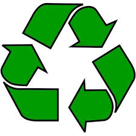
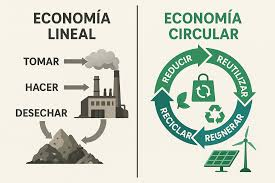
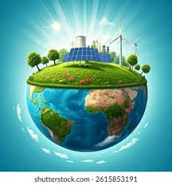
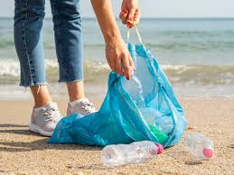

Un nuevo modelo económico que elimina el desperdicio, regenera la naturaleza y mantiene los recursos en uso el mayor tiempo posible.
Descúbrelo →
La economía circular es un sistema económico regenerativo diseñado para eliminar los residuos y la contaminación desde el diseño. En lugar del modelo lineal tradicional "tomar → fabricar → desechar", propone que los materiales y productos se mantengan en uso durante el mayor tiempo posible.
Se basa en tres principios clave: eliminar residuos y contaminación, circular productos y materiales y regenerar la naturaleza. Es la respuesta a los límites del planeta y al agotamiento de recursos naturales.

La Fundación Ellen MacArthur define la economía circular sobre tres pilares que trabajan juntos como un sistema.
Los residuos no existen por naturaleza; son consecuencia de un mal diseño. La economía circular parte del diseño para que los productos no generen desperdicios desde el principio.
Los productos técnicos se recuperan y regeneran. Los biológicos se devuelven al ciclo natural. Los materiales mantienen su valor durante el mayor tiempo posible.
En lugar de degradar el entorno natural, la economía circular busca mejorarlo activamente: recuperar suelos, biodiversidad y ecosistemas.
Antes de reciclar, se prioriza la reutilización directa, la reparación y la remanufactura para mantener el máximo valor de cada producto.
Los productos se diseñan desde el inicio pensando en su segunda, tercera o cuarta vida. La durabilidad y la desmontabilidad son clave.
Compartir, alquilar y usar como servicio en lugar de poseer. El valor se crea a través del uso, no de la propiedad.
En la economía circular, los materiales siguen un flujo continuo que minimiza pérdidas y maximiza valor.
Los productos se diseñan pensando en su desmontaje, reparación y reutilización.
Fabricación eficiente usando energías renovables y materiales recuperados.
Logística verde que optimiza transporte y reduce la huella de carbono.
Los productos duran más; se reparan y comparten en lugar de desecharse.
Al final de su vida, los materiales vuelven al ciclo como nuevos recursos.
Transitar hacia una economía circular no solo reduce residuos: genera empleo, innovación y resiliencia.
Podría reducir las emisiones globales de gases de efecto invernadero en un 45% para 2030, según la Fundación Ellen MacArthur.
Se estima que en Europa podría generar hasta 700.000 nuevos puestos de trabajo en sectores de reparación, reciclaje y remanufactura.
Las empresas europeas podrían ahorrar hasta 600.000 millones de euros anuales en costes de materiales.
Drástica reducción de residuos en vertederos, plásticos en océanos y contaminación de suelos y agua.

Muchas empresas y ciudades ya están liderando la transición hacia un modelo circular con resultados sorprendentes.

Empresas como Adidas fabrican zapatillas con plástico recuperado de los océanos, demostrando que los residuos pueden convertirse en productos de valor.
♻️ ReciclajePlataformas como Rent the Runway o Vinted permiten alquilar y vender ropa usada, extendiendo la vida útil de las prendas y reduciendo el fast fashion.
👗 Moda circularLos residuos orgánicos de ciudades como Copenhague se transforman en compost para la agricultura, cerrando el ciclo de los nutrientes de forma natural.
🌱 BiocicloPequeñas acciones cotidianas forman parte del gran ciclo. Reutiliza, repara, comparte.
Volver al inicio ↑